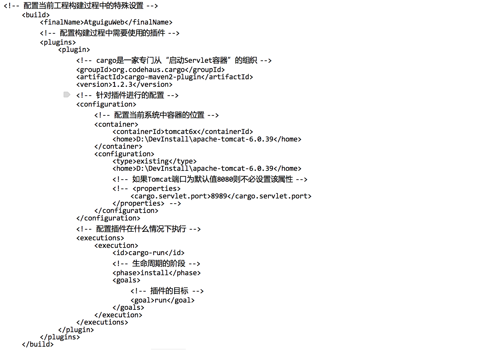

第一部分 概述
1.1 未使用构建工具的问题
- 项目分层
- 在开发中存在的问题
- 一个项目就是一个工程
如果项目非常庞大，不适合使用package划分模块；最好每个模块对应一个工程，利于分工协作； 通过Maven可以将一个项目拆分成若干个工程 - 项目中需要的jar包需要手动放到/WEB-INF/lib目录下
同样的jar包重复出现在不同的项目之中会浪费存储空间使工程变得臃肿； 通过Maven可以将jar包保存在仓库中，需要的工程引用即可，不需要将jar包赋值到项目其中 - jar包需要手动准备
不同技术的官网提供的jar包各式各样，有些技术的官网只能通过专门工具才可以进行下载，非正规途径下载的jar包可能存在问题； 通过Maven可以通过一种规范的方式下载jar包，所有知名框架或第三方工具按照统一规范存放在Maven中央仓库中 - 一个jar包依赖其他的jar包需要手动加入
例如文件上传下载的组件commons-fileupload.jar需要依赖于commons-io.jar,如果所有jar包之间的依赖都需要了解的话会增加大量学习成本 通过Maven可以自动将被依赖的jar包导入进来
- 一个项目就是一个工程
1.2 构建
- Maven是一款服务于Java平台的自动化构建工具
- 概念：以java源文件、框架配置文件、JSP、JS、图片等资源为原材料，生产(编译+部署+搭建)出一个可运行的项目的过程
- 编译：Java源文件(User.java) -> 编译 -> Class字节码文件(User.class) -> JVM执行
- 部署：一个动态b/s项目最终运行的并不是动态WEB工程本身，而是动态WEB工程编译后的结果；当浏览器访问Java程序时就必须将包含Java程序的Web工程编译结果部署到服务器的指定目录下并启动服务器
- 运行时环境：一组jar包的集合，对所需的jar包进行引用，并没有将jar包本身复制到工程中，并不是目录
- Web工程与编译结果的目录区别：在开发过程中所有的路径和配置文件都是以便以结果的目录结构为标准的
- 构建过程中的环节
- 清理：将以前编译的旧class字节码文件删除，为下一次编译做准备
- 编译：将Java源程序编译成class字节码文件
- 测试：自动测试，自动调用Junit程序来进行测试
- 报告：报告测试程序执行的结果
- 打包：动态Web工程打包为war，Java工程打包为jar
- 安装：Maven中的特定概念，将打包得到的文件复制到仓库中的指定位置
- 部署：将动态Web工程生成的war包复制到Servlet容器的指定目录下，使其可以运行
1.3 安装Maven
- 检查当前系统环境是否配置JAVA_HOME
输出JAVA_HOME路径：/usr/libexec/java_home - 解压Maven核心压缩包，放到一个非中文无空格目录下
- 配置Maven环境变量
- 打开Terminal，设置Maven classpath
$ vi ~/.bash_profile - 添加Maven的环境变量后保存退出(:wq!)vi
export M2_HOME=/Users/robbie/apache-maven-3.3.3cexport PATH=$PATH:$M2_HOME/bin - 输入命令使bash_profile生效
$ source ~/.bash_profile
- 打开Terminal，设置Maven classpath
- 输出Maven版本信息，查看是否安装成功：
mvn -v
第二部分 Maven核心
2.1 约定目录
- 约定的目录结构
- 根目录：工程名称
- src：存放源码
- main：存放主程序
- java：存放java源文件
- resource：存放框架或其他资源文件
- test：存放测试程序
- java
- resource
- main：存放主程序
- pom.xml：Maven工程核心配置文件
- 创建约定的目录结构原因
- Maven需要负责项目的自动化构建，Maven需要知道各个文件对应的保存位置
- 如果自定义内容让框架或工具知道，需要通过配置的方式告诉框架或者遵循框架内部存在的约定(约定优于配置)
2.2 常用Maven命令
- 执行与构建过程相应的Maven命令(编译，测试，打包等)，必须进入pom.xml所在的目录
- 常用命令
- mvn clean：清理
- mvn compile：编译主程序
- mvn test-compile：编译测试程序
- mvn test：执行测试
- mvn package：打包
- mvn install：安装
- mvn site：生成站点
2.3 POM与坐标
- POM
- 含义：POM(Project Object Model)项目对象模型，是Maven对一个单一项目的描述，POM实现并驱动了以模型来描述的构建方式
- pom.xml：是Maven工程的核心配置文件，与构建过程相关的一切设置都在该文件中进行配置
- 坐标
- 数学中的坐标：在平面上使用x,y两个向量可以唯一的定位平面中的任何一点；在空间中使用x,y,z三个向量可以唯一的定位空间中的任意一点
- Maven中的坐标：使用三个向量可以在仓库中定位唯一的一个Maven工程
- groupid:公司或组织域名倒序+项目名
e.g. <groupid>org.yang.demo</groupid> - artifactid:模块名
e.g. <artifactid>hello-maven<artifactid> - version:版本名
e.g. <version>1.1.0</version>
- groupid:公司或组织域名倒序+项目名
- 坐标与仓库中的路径保持一致
- 坐标
<groupid>org.yang.demo</groupid> <artifactid>hello-maven<artifactid> <version>1.1.0</version>
- 仓库中路径
org/yang/demo/hello-maven/1.1.0.RELEASE/hello-maven-1.0.0.RELEASE.jar
- 坐标
2.4 仓库
- Maven联网下载插件与修改本地仓库
- Maven的核心程序中仅仅定义了抽象的声明周期，但具体的工作必须由特定插件来完成，而插件本身并不包含于Maven程序当中
- 当执行的Maven命令需要使用某些插件时，Maven核心程序首先到本地仓库(系统用户家目录/.m2/repository)中查找，如果本地仓库中不存在则会到中央仓库去下载，如果此时无法连接外网则会构建失败
- 修改Maven本地仓库地址
- 找到Maven解压目录/conf/settings.xml文件
- 找到localRepository标签，将其从注释中取出
- 将localRepository标签值设置为本地仓库地址
- 仓库
- 仓库的分类
- 本地仓库：当前电脑上部署的仓库目录，为当前系统上所有Maven工程服务
- 远程仓库：
- 私服：搭建在局域网环境中，为局域网范围内的所有Maven工程服务
- 中央仓库：架设在Internet上，为全世界所有Maven工程服务
- 中央仓库镜像：为了分担中央仓库的流量，减轻服务器压力提升用户访问速度，建立若干个镜像的中央仓库
- 仓库中保存的内容：Maven工程
- Maven自身所需要的插件
- 第三方框架或工具的jar包
- 自己开发的Maven工程
- 仓库的分类
2.5 依赖
- Maven解析依赖信息时回到本地仓库中查找被依赖的jar包
- 对于自己开发的Maven，需要通过
mvn install命令安装到本地仓库之中 - 依赖的范围
- 依赖传递性
- 定义：依赖传递性是在maven2中添加的新特征，作用是不需要考虑依赖的库文件所需要依赖的库文件，能够将依赖模块的依赖自动的引入
- 优点：避免工程中的各个模块重复声明依赖信息，只需一个模块专门维护依赖关系即可
- 注意：非compile范围的依赖无法传递，需要重复声明依赖
- 依赖的排除
- 定义：通过依赖的排除可以取消的传递过来的不需要的依赖
- 需要设置依赖排除的场合：不稳定的jar包，潜在的威胁等
- 设置方式：在依赖关系中通过<dependency>的子标签<exclusions>配置不允许该依赖传递过来的依赖
<exclusions> <exclusion> <groupId></groupId> <artifactId></artifactId> </exclusion> </exclusions>
- 依赖的原则
- 作用：解决模块工程之间的jar包冲突问题
- 路径最短原则：当传递过来多个相同jar包的不同版本时，使用传递路径最短的jar包，其他的自动排除

- 先声明者优先原则：当传递过来多个相同jar包的不同版本且传递路径相同时，使用最先声明dependency的依赖传递来的jar包
- 利用自定义标签统一管理依赖信息
- 统一管理版本号
- 使用properties标签内使用自定义标签统一声明版本号
<properties> <org.yang.demo.servlet.version>2.5</org.yang.demo.servlet.version> </properties>
- 在需要统一版本的位置通过${自定义标签名}来引用声明的版本号
<version>${org.yang.demo.servlet.version}</version>
- 使用properties标签内使用自定义标签统一声明版本号
- properties标签配合自定义标签声明凡是先声明后引用的场合都适合使用
- 统一管理版本号
2.6 生命周期
- Maven生命周期定义：各个构建环节执行的顺序，不能打乱顺序，需要按照既定的正确顺序来执行
- Maven核心程序中定义了抽象的生命周期，生命周期中各个阶段的具体任务由插件来完成
- Maven核心程序为了更好的实现自动化构建，无论执行生命周期中的哪一个阶段，都是从生命周期最初的位置开始执行
- 插件和目标：
- 声明周期的各个阶段只是定义了要执行的任务，各个阶段的插件和目标是对应的，特定的目标由特定的插件来完成
- 目标可以看做调用插件功能的命令
声明周期阶段 插件目标 插件 compile compile maven-compile-plugin test-compile testCompile mevan-compile-plugin ... ... ... - Clean生命周期
- pre-clean 执行一些需要在 clean 之前完成的工作
- clean 移除所有上一次构建生成的文件
- post-clean 执行一些需要在 clean 之后立刻完成的工作
-
- pre-site 执行一些需要在生成站点文档之前完成的工作
- site 生成项目的站点文档
- post-site 执行一些需要在生成站点文档之后完成的工作,并且为部署做准备
- site-deploy 将生成的站点文档部署到特定的服务器上
- Default生命周期：Default 生命周期是Maven生命周期中最重要的一个,绝大部分工作都发生在这个生命周期中
- validate
- generate-sources
- process-sources
- generate-resources
- process-resources 复制并处理资源文件,至目标目录,准备打包
- compile 编译项目的源代码
- process-classes
- generate-test-sources
- process-test-sources
- generate-test-resources
- process-test-resources 复制并处理资源文件,至目标测试目录
- test-compile 编译测试源代码
- process-test-classes
- test 使用合适的单元测试框架运行测试。这些测试代码不会被打包或部署
- prepare-package
- package 接受编译好的代码,打包成可发布的格式,如 JAR
- pre-integration-test
- integration-test
- post-integration-test
- verify
- install 将包安装至本地仓库,以让其它项目依赖
- deploy 将最终的包复制到远程的仓库,以让其它开发人员与项目共享或部署到服务器上运行
2.7 在eclipse中使用Maven
- maven插件：Eclipse内置了Maven插件，不需要额外安装，但需要设置插件的基本属性
- maven插件设置
- installations：指定Maven核心程序的位置，不建议使用插件自带的Maven程序，使用自己下载解压的程序
- user settings：指定conf/settings.xml的位置，进而获取本地仓库的位置
-
基本操作
- 创建Maven版Java工程
- File -> New -> Maven Project
- 勾选Create a simple project(skip archetype selection)->next
- 填写groupid, Artifact id, Version->Finish
- 将项目JDK从1.5修改为1.8
- Properties for project_name -> Java Build Path -> Libraries -> Remove JRE1.5, Add JRE1.8
- Properties for project_name -> Java Compiler -> Compiler compliance level -> 1.8
- 创建Maven版Web工程
- File -> New -> Maven Project
- 勾选Create a simple project(skip archetype selection)->next
- 填写groupid, Artifact id, Version，将Packaging选项从jar改选为war -> Finish
- 将项目JDK从1.5修改为1.8
- Properties for project_name -> Project Facets -> 取消选择Dynamic Web Module -> Apply -> 再次勾选Dynamic Web Module -> 点击Further configuration available -> 将Content Directory改为"src/main/webapp" -> OK -> Apply -> OK
- 执行Maven命令: 在pom.xml右键->Run As
如果需要执行compile则需要点击Maven Build... -> 在Goals中填写compile命令 -> 点击Run按钮
- 创建Maven版Java工程
2.8 继承
- 统一管理各个模块工程中对不能传递的相同依赖的版本
- 解决方案：将依赖提取到父工程中，在子工程中声明依赖不指定版本，以父工程中设定的版本号为准
- 操作步骤：
- 配置继承后需要先安装父工程后安装子工程，否则会安装失败
2.9 聚合与自动化构建
- 聚合
- 作用：一键安装各个模块工程，自动根据依赖顺序逐一安装
- 配置方式：在一个总的聚合工程中配置各个参与聚合的模块工程
<modules> <module>../JavaProject01</module> <module>../JavaProject02</module> </modules> - 使用方式：在聚合工程的pom.xml上右键 -> Run As -> Maven install
- 自动化构建
- 编写自动化构建配置信息 
- 执行自动化构建: 进入项目目录文件夹，使用
mvn deploy命令执行自动化构建(在eclipse中使用该命令会导致无法退出和乱码问题，最好在终端使用)